I redesigned the Lifecycle editor - Octopus's core setup step - running two competing interactive prototypes to find an approach that actually worked.
The redesigned Lifecycle editor - building a lifecycle with the Kanban phase builder.
In software deployment, a lifecycle defines how a release moves from code to production - which environments it passes through (Development, Staging, Production), in what order, and whether each step deploys automatically or requires a manual sign-off. Every project in Octopus needs one. It's one of the first things a new user has to configure, and it shows up throughout the product: next to the deployment process, during project creation, and in trigger configuration.
The lifecycle editor hadn't been updated in years. It didn't reflect Octopus's current design language, and it forced users to think in abstractions - phases, progression rules, retention policies - before they could express a much simpler intent: which environments does my release pass through, and in what order?
An expert "secret shopper" evaluation (PURE method, run by the Associate Design Director in their first week at Octopus) walked through the full onboarding experience cold. Key findings relevant to Lifecycle:
"Lifecycle" was the most persona-split term in the product. Familiar to enterprise/.NET users, but opaque to startup and container-native users. 8 of 18 simulated participants were confused by it - a higher confusion rate than any other term or concept in the study.
The study confirmed that the problem wasn't nomenclature. Users who understood the word still struggled with the interaction model. The issue was conceptual: the UI presented phases and rules, when users were thinking about environments and sequences.
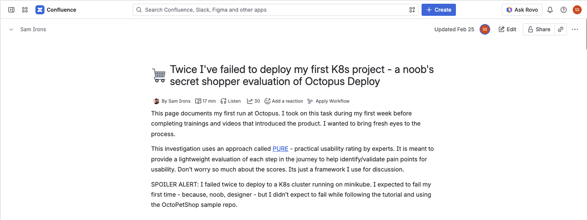
Sam Irons' PURE evaluation - "Twice I've failed to deploy my first K8s project" - the expert audit that rated the lifecycle flow "Not Usable" at multiple points
During a research session, a participant shared their screen without being asked to explain how they think about deployment. They navigated to AWS documentation on cell-based architecture and pointed to this diagram.
They call them waves - not phases. Environments grouped into sequential stages, each broader than the last, with a clear left-to-right flow. It's the Kanban mental model, described spontaneously by someone who had never seen the design.
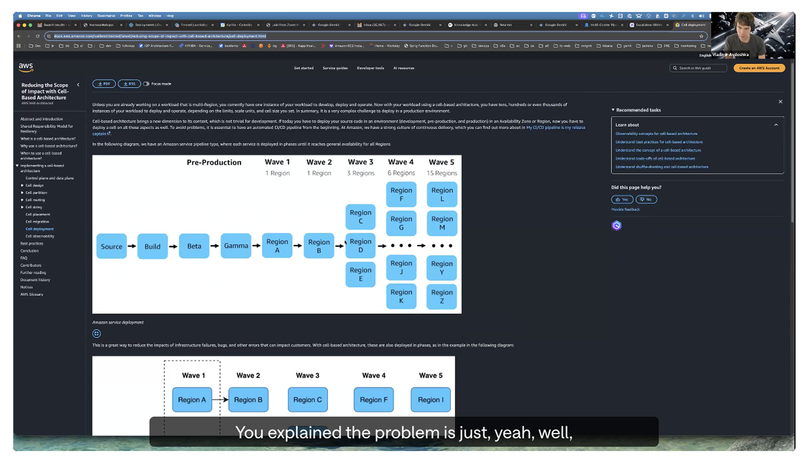
A research participant shares their screen mid-call to explain how they think about deployment - "waves" of environments in a left-to-right sequence. Unprompted. This is the Kanban layout.
Describing the friction is one thing. Watching it happen is another. The recording below shows the experience of building a lifecycle from scratch using the original card-based editor - the exact flow users were expected to complete at onboarding.
Building a lifecycle from scratch in the original card-based UI. This is the flow every new user was expected to complete.
The whole thing started with two sketches. One explored a form-based approach - a phase with a name field, environment selector, and a toggle for manual or automatic promotion. The other explored a Kanban model - columns as phases, environment cards dragged in from a panel. Both took minutes to draw, but they represented genuinely different mental models.
Rather than choosing one based on intuition, I built both as fully interactive prototypes - real HTML/CSS/JS builds, drag-and-drop working, toggles clickable - and let real users and stakeholders tell me which one worked.
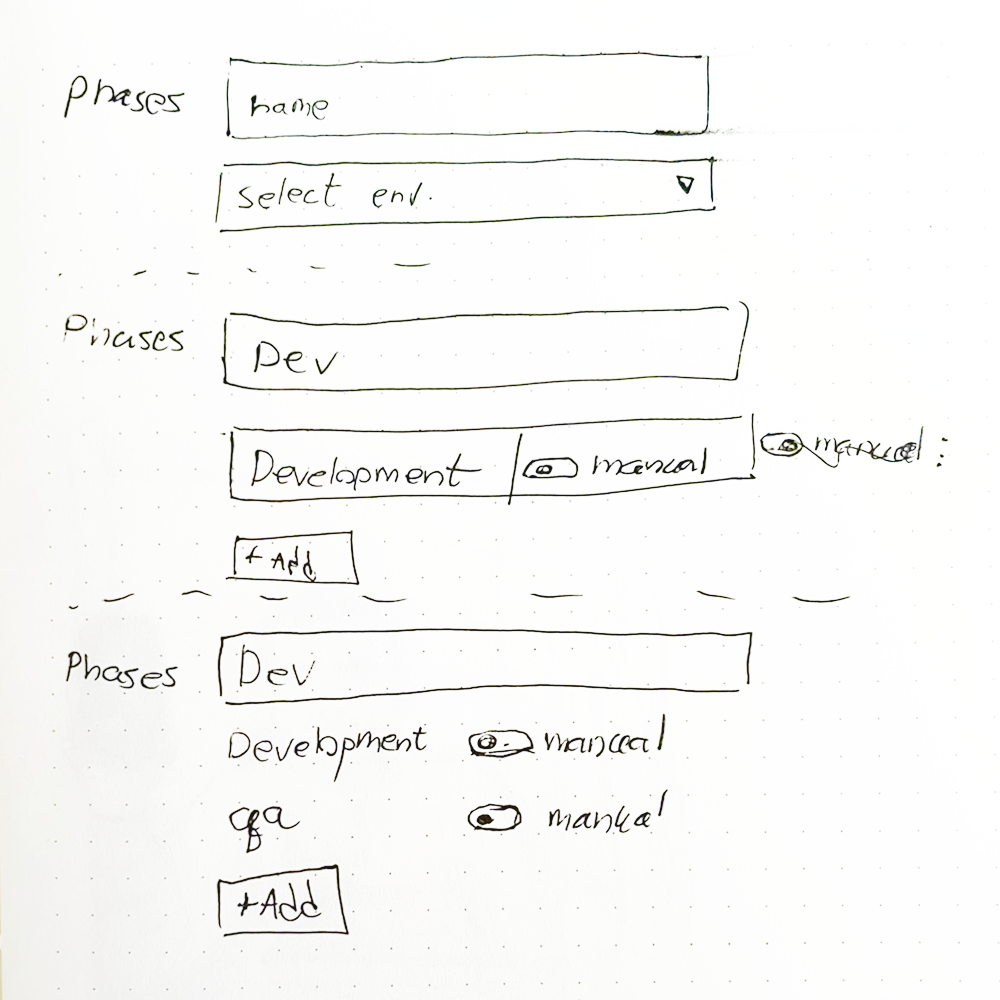
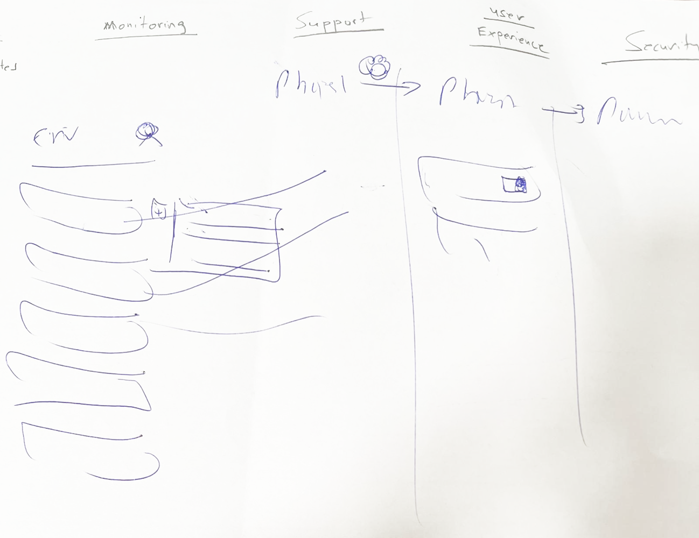
I ran qualitative sessions with both prototypes - giving participants the same task with each and watching how they moved through it. The results weren't a clean winner, but they pointed clearly in one direction.
The Kanban prototype got a consistently different reaction. Participants described it as feeling more intuitive - environments as physical objects you place, rather than values you type into a form. Several used the word fun. The drag-and-drop interaction made the mental model tangible in a way the form couldn't.
The form was faster to complete and more familiar to users already in the Octopus ecosystem. But familiarity isn't the same as clarity - and the goal was a tool that new users could understand on their own, without a walkthrough.
The qualitative signal was clear: Kanban matched how people wanted to think about the problem. That became the direction.
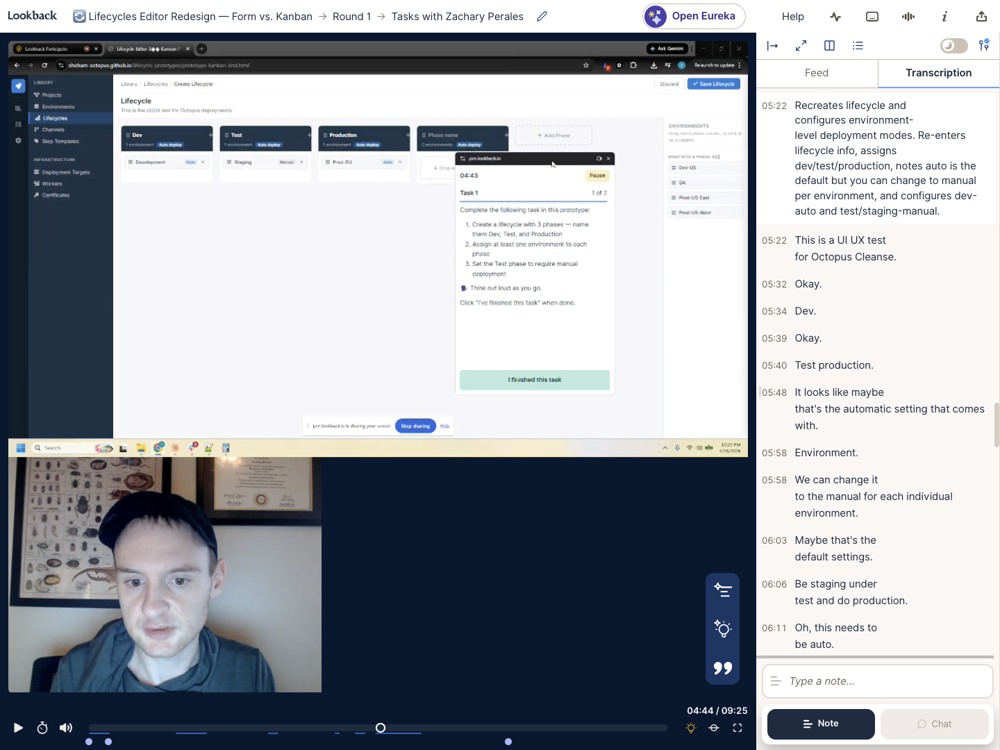
Lookback session - a participant working through the Kanban prototype. Transcription on the right: "I think it's clear and more straightforward and intuitive."
Both approaches reached a finished state. The Kanban board became the primary direction - it matched the mental model users already had, made the pipeline visible, and felt more intuitive in testing. The form layout deserves an honourable mention: it was clean, familiar, and would have been a significant improvement over the original. It just wasn't as good.
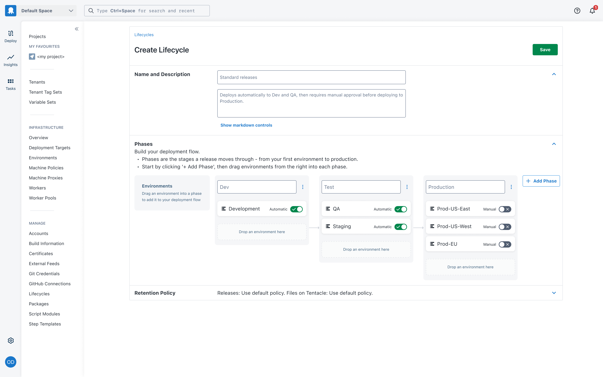
The Kanban approach - phases as columns, environments placed inside them. The pipeline is visible the whole time.
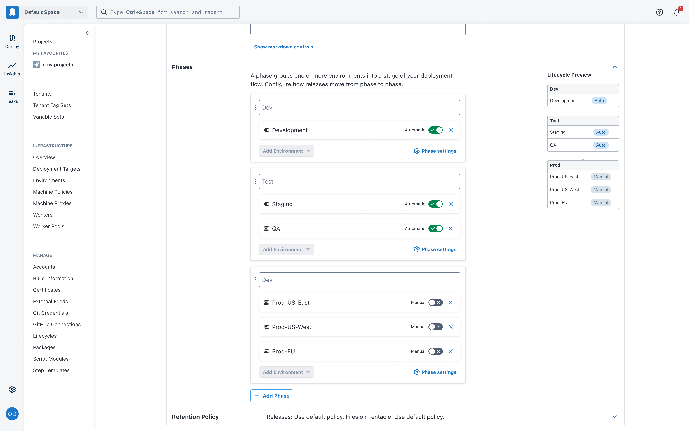
The form approach - structured and familiar. A real improvement, just not the winner.
The new lifecycle editor isn't a reskin of the old one. The interaction model, the information hierarchy, and the mental model it's built on are all different. These are the four ideas that drove it.
The full lifecycle creation flow - from blank canvas to a complete, configured pipeline.
The lifecycle list is the first screen users land on. In the old UI, every lifecycle looked the same - a name, then a tree of phases and environments nested underneath. There was no description, no sense of what the lifecycle did or how releases moved through it. Users couldn't scan the list to orient themselves or decide which lifecycle to use for their project.
The redesign treats the list as a map. Each lifecycle shows its description, its phases as distinct columns, the environments inside each phase, and whether each environment deploys automatically or requires manual approval. At a glance, you understand the shape of a lifecycle without opening it.
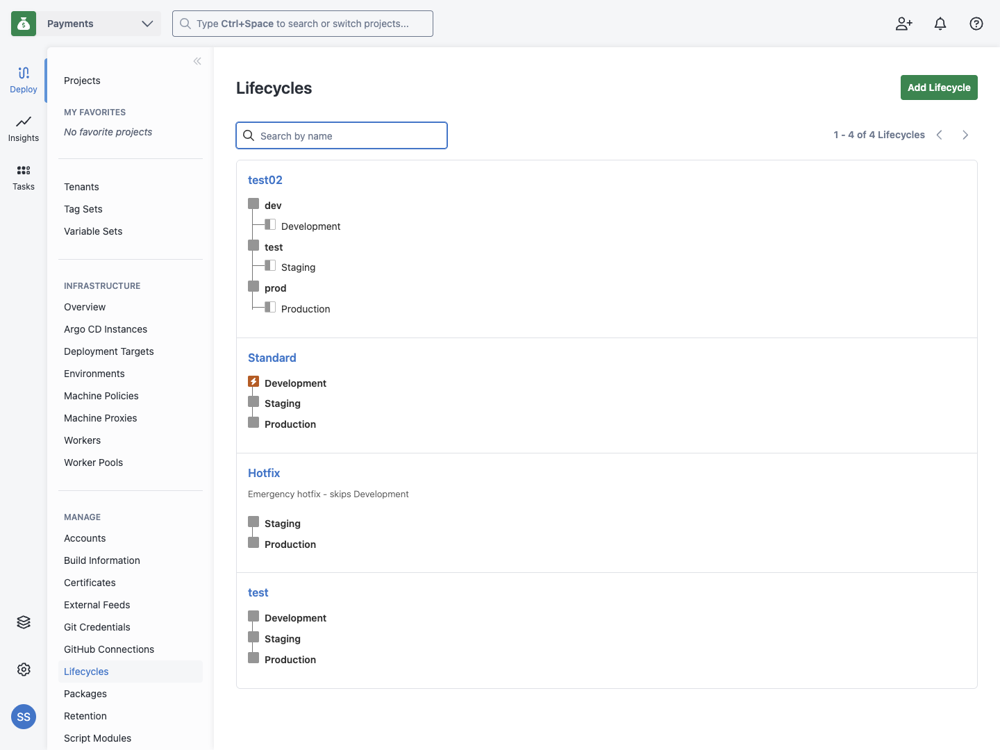
A flat tree. No descriptions. No sense of what each lifecycle does or in what order releases move through it.
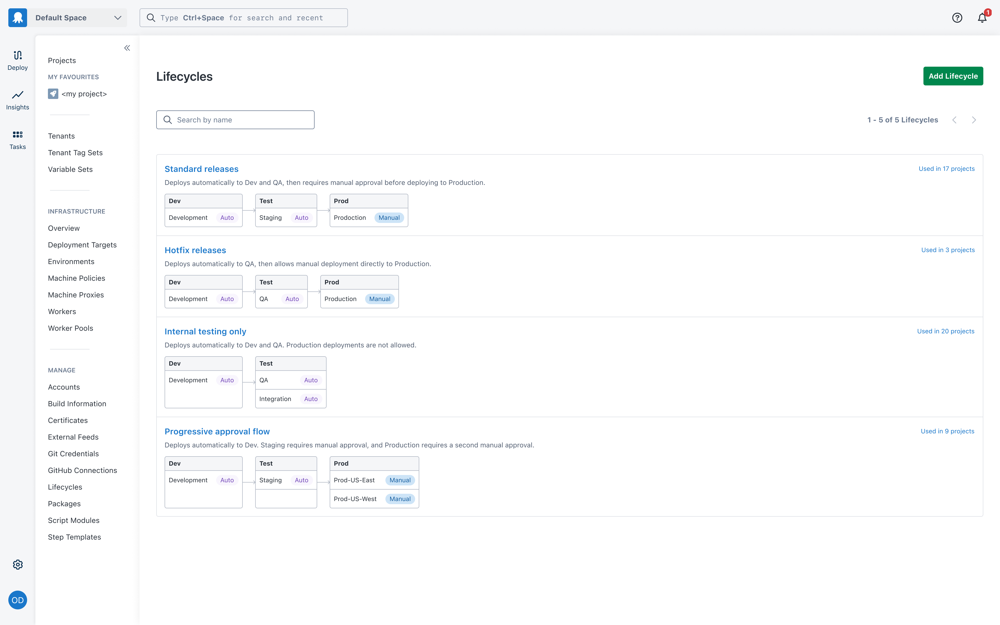
Each lifecycle tells you what it does. Phases as columns, environments inside them, Auto/Manual badges visible - the pipeline is readable at a glance.
Phase settings - retention policies, minimum environments, promotion mode - needed a home. A modal was the default option, but it hides the lifecycle behind it, which is exactly the context a user needs when configuring a phase. A side drawer keeps the board visible, gives more vertical space for the settings, and treats configuration as part of the flow rather than an interruption of it.
It also fits how Octopus already handles contextual panels elsewhere in the product - the step editor, runbook settings. No new pattern to learn.
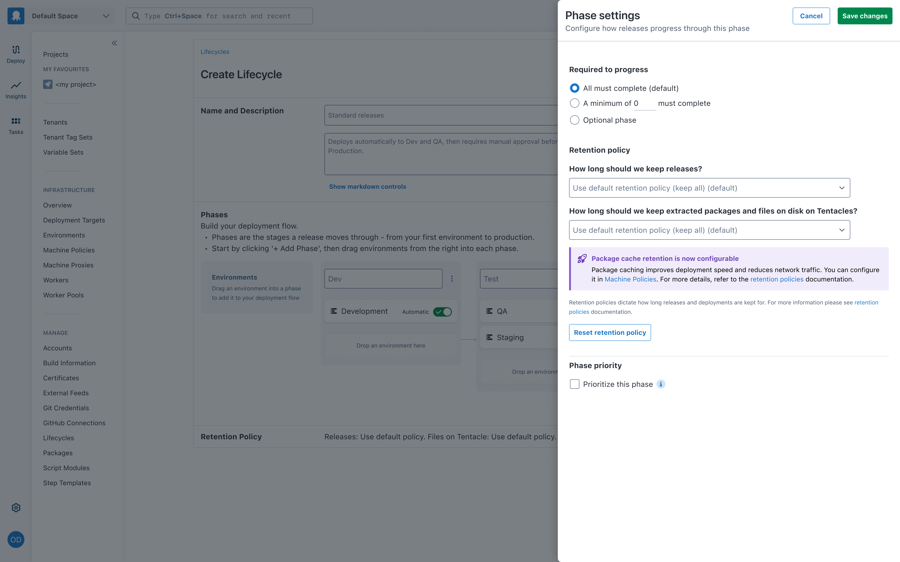
Phase settings open in a drawer - the Kanban board stays visible behind it.
Copy is part of the design - not a phase that happens later. I wrote UX copy for four states that previously had none. Each piece of copy had to do real work: orient a confused user, explain a concept without jargon, or handle an edge case gracefully.
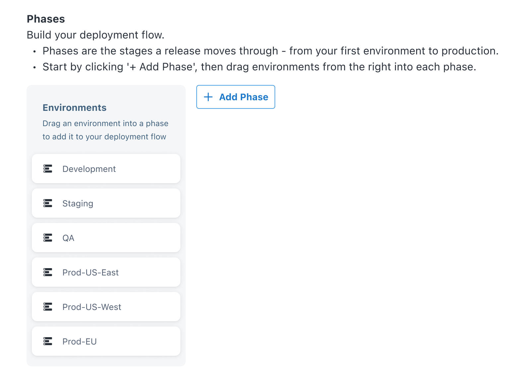
The redesign landed well internally. The engineering team found the Kanban paradigm straightforward to implement, and the drag-and-drop interaction held up cleanly in production. The design passed Frontend Foundations review without revision requests - a bar that's explicitly about system coherence and production quality, not just visual polish.
User testing gave the clearest signal: participants who used both prototypes described the Kanban as feeling more intuitive and - notably - more enjoyable to use. That's not a soft result. When a configuration UI is described as fun, it means the mental model fit.